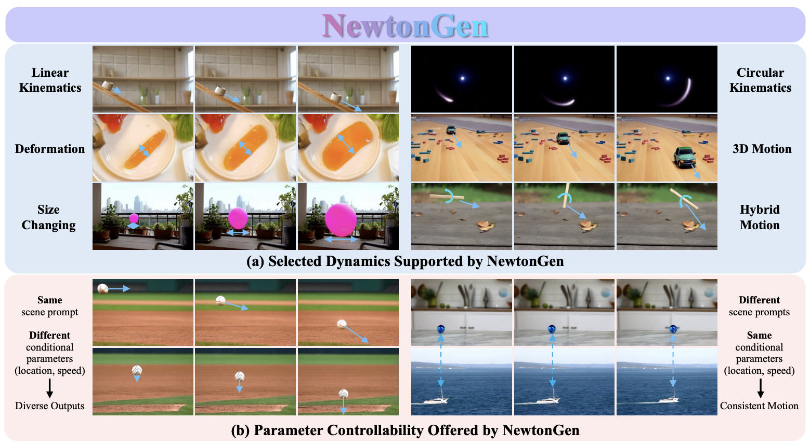

Introduction
My name is Yu Yuan (袁煜), a third-year PhD student at Purdue ECE, under the supervision of Prof. Stanley H. Chan. Prior to this, I obtained my master and bachelor degree in Aerospace Engineering from Shanghai Jiao Tong University in 2023 and 2020, respectively, and a bachelor degree in Public Administration in 2020.
My research lies at the intersection of generative models, computational photography, and physical understanding. My long-term passion is to perceive and understand visual signals, and to leverage it to build physically consistent generative worlds.
Contact
I’m currently seeking a 2026 summer internship, with a focus on physically-driven generative applications and research.
I’m always happy to collaborate and make new friends. Feel free to
reach out! :
Email |
Linkedin |
Google
Scholar | Github |
Flickr
Research
Generative Models
Generative Photography: Scene-Consistent Camera Control for Realistic Text-to-Image SynthesisYu Yuan, Xijun Wang, Yichen Sheng, Prateek Chennuri, Xingguang Zhang, Stanley Chan CVPR 2025 Highlight & CVPR 2025 Demo |
|  |
NewtonGen: Physics-consistent Text-to-Video Generation via Neural Newtonian DynamicsYu Yuan, Xijun Wang, Zeeshan Nadir, Bole Ma, Stanley Chan Under Review |
Learning to Kindle the StarlightYu Yuan, Jiaqi Wu, Lindong Wang, Zhongliang Jing, Henry Leung, Shuyuan Zhu, Han Pan Rejected by CVPR 2023 |
Computational Photography
iHDR: Iterative HDR Imaging with Arbitrary Number of InputsYu Yuan, Yiheng Chi, Xingguang Zhang, Stanley Chan ICIP 2025 |
Astrophotography Turbulence Mitigation via Generative ModelsJoonyeoup Kim, Yu Yuan, Xingguang Zhang, Xijun Wang, Stanley Chan ICIP 2025 |
Real-world Vision
Learning Phase Distortion with Selective State Space Models for Video Turbulence MitigationXingguang Zhang, Nicholas Chimitt, Xijun Wang, Yu Yuan, Stanley Chan CVPR 2025 Highlight |
Beyond Clean Pixels: Interdisciplinary Lessons from Turbulent Long-Range Face RecognitionLanqing Guo1, Xijun Wang1, Minchul Kim1, Yu Yuan, Wes Robbins, Xingguang Zhang, Stanley H. Chan, Zhangyang Wang, Xiaoming Liu Under Review |
Personalized Generative Low-light Image Denoising and EnhancementXijun Wang, Prateek Chennuri, Yu Yuan, Bole Ma, Xingguang Zhang, Stanley Chan Under Review |
RCMixer: Radar-camera Fusion Based on Vision Transformer for Robust Object DetectionLindong Wang, Hongya Tuo, Yu Yuan, Henry Leung, Zhongliang Jing Journal of Visual Communication and Image Representation |
Multimodal Image Fusion based on Hybrid CNN-Transformer and Non-local Cross-modal AttentionYu Yuan, Jiaqi Wu, Zhongliang Jing, Henry Leung, Han Pan |
Projects
On-going Projects
- Physically-driven Video Generation
- Inferring Physical Properties from Vision
- Very Long-distance Ranging and 3D Understanding
Previous Projects
- Generative Astronomical Image Restoration Through Atmospheric Turbulence (2025)
- Video Restoration Classifier (2024)
- A Underwater Binocular Multi-exposure Imaging System (2022)
- Ultra-wideband-based Cooperative Multi-UAV Positioning Technology (2021)
- A Modular Custom Aviation Model Design for Tyros (2020)
Patent
基于自主水下机器人惯导与超短基线定位传感器的轨迹解算与配准方法，中国发明专利 CN 114993313 B （2022）
Misc.
- Angler: Got the Prize named Fish of the Year ('Cause I Got the Biggest One of Goldeye Fish in Indiana State, 2023)
- Landscape Photographer: One Milky Way Photo Accepted to Astronomy Picture of the Day in Nightchina (2021)
- Mountaineer: Arrived at the 2nd Peak of Zuimi MT.Siguniang (5276m, 2020)
- Aviation Enthusiast: Experienced More Than 40 Types of Manned Aircrafts, also with 9 Years of Drone Flying Experience. I am a Certificated Remote Pilot under FAA Part 107.